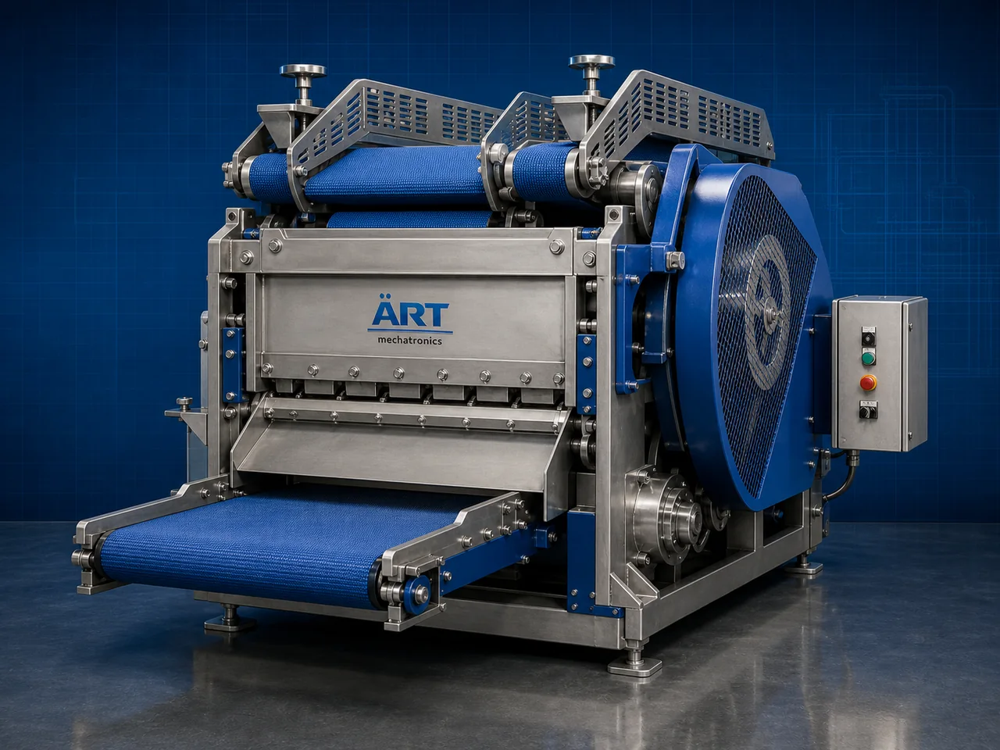

Industrial Blade Cutter Machine (Heavy Duty Industrial Cutting System)
An Industrial Blade Cutter Machine, also known as a Heavy Duty Cutting Machine, Industrial Knife Cutter, Material Cutting Machine, or Industrial Blade Cutting System, is an advanced industrial processing solution designed for precision cutting, slicing, trimming, size reduction, sheet cutting, strip cutting, web cutting, and high-speed material processing operations across food processing, packaging, plastic, rubber, wood, paper, textile, metal, and industrial manufacturing industries.

About the Blade Cutter
Industrial blade cutter systems are widely used for:
- Sheet cutting operations
- Roll and web cutting
- Food product slicing
- Plastic and rubber cutting
- Paper and board trimming
- Textile cutting operations
- Industrial material size reduction
- Continuous production line cutting
The machine improves:
- Cutting accuracy
- Production efficiency
- Product uniformity
- Material utilization
- Processing speed
- Industrial safety
- Automation integration efficiency
Industrial blade cutter machines use:
- Heavy-duty industrial blades
- Servo synchronized cutting systems
- PLC and HMI automation controls
- Precision feeding mechanisms
- Conveyor synchronized handling systems
to automatically cut materials with superior accuracy and high production efficiency.
Industrial blade cutter machines are widely used in industries such as:
Food processing industries Packaging industries Plastic industries Rubber industries Paper industries Wood industries Textile industries Metal processing industries
where precision cutting, continuous processing, and high-speed production are essential.
The machine is highly suitable for:
- Food cutting operations
- Plastic sheet cutting
- Flexible packaging cutting
- Roll and web trimming
- Industrial material processing
- Automated production line cutting
ART Mechatronics offers high-performance industrial blade cutter machines, engineered for continuous industrial operation, precision cutting performance, smooth material handling, and reliable long-term industrial processing.
Working Principle of Industrial Blade Cutter Machine
- 1. Material Feeding & Conveyor Handling Materials are automatically transferred through synchronized feeding systems for cutting operation.
- 2. Material Positioning & Alignment Process Machine automatically aligns and positions materials before cutting operation.
Servo synchronization ensures smooth material flow and accurate cutting operations.
- 3. Cutting Operation Machine handles cutting of: ✔ Food products ✔ Plastic sheets ✔ Rubber materials ✔ Paper rolls ✔ Textiles ✔ Laminates ✔ Wood materials ✔ Industrial web materials
accurately and continuously.
- 4. Precision Cutting & Trimming Process Machine performs: Sheet cutting Strip cutting Web trimming Roll cutting Edge cutting Size reduction Continuous slicing
for efficient industrial material processing operations.
- 5. Intelligent Automation & Safety Integration Optional systems include: Automatic blade positioning Vision alignment systems Safety guarding systems Dust extraction systems Material tracking systems
- 6. Finished Product Discharge Processed materials discharged automatically for: Packaging operations Further processing Warehouse storage Export shipment handling
Types of Industrial Blade Cutter Machines
- 1. Rotary Blade Cutter Machine Designed for: ✔ Continuous high-speed cutting applications
- 2. Guillotine Blade Cutter Machine Suitable for: ✔ Sheet and board cutting operations
- 3. Web & Roll Cutter Machine Uses: ✔ Flexible packaging and roll processing systems
- 4. Food Blade Cutter Machine Designed for: ✔ Food processing and slicing operations
- 5. Servo Driven Blade Cutter Machine Suitable for: ✔ Precision industrial cutting operations
- 6. Fully Automatic Industrial Cutting System Designed for: ✔ Complete industrial processing automation lines
Industries Using Industrial Blade Cutter Machines
🍅 Food Processing Industry Snacks, bakery products, frozen foods, spices, and food cutting systems. 📦 Packaging Industry Flexible packaging films, laminates, cartons, and industrial cutting systems. ⚙️ Plastic & Rubber Industry Plastic sheets, rubber materials, and industrial trimming operations. 📄 Paper Industry Paper rolls, boards, labels, and industrial slitting systems. 🪵 Wood & Furniture Industry Wood panels, boards, and industrial cutting operations. 🛒 FMCG Industry Retail packaging materials and industrial processing systems.
Features & Advantages
- High-speed automatic cutting operation
- Accurate and uniform material cutting systems
- Heavy-duty industrial blade technology
- PLC and servo automation control systems
- Improves production efficiency and material utilization
- Reduces manual cutting dependency
- Supports multiple material formats and thicknesses
- Reliable long-term industrial performance
- Smooth integration with production automation lines
Technical Highlights
Machine Type: Industrial blade cutter machine Heavy-duty cutting system Industrial material cutter Material Compatibility: Food products Plastic sheets Paper rolls Rubber materials Textiles Wood materials Industrial web materials Integration: Servo cutting systems Conveyor synchronization systems Automatic feeding systems Blade positioning systems Features: PLC control system Touchscreen HMI Heavy-duty industrial blades Safety guarding systems Precision alignment systems Applications: Food cutting Packaging material cutting Industrial sheet cutting Roll trimming Web processing Material size reduction Automation: Semi-automatic Fully automatic industrial systems
Turnkey Industrial Cutting Solutions
ART Mechatronics offers: Complete industrial cutting systems Automatic material cutting solutions Industrial processing automation systems Conveyor synchronization systems Installation & commissioning After-sales service & AMC
Why Choose Art Mechatronics
Expertise in industrial processing and automation systems Customized cutting solutions for multiple industries High-performance and precision cutting technology Advanced PLC and servo automation systems Proven industrial processing performance across sectors
Applications
Food Processing Plants Packaging Manufacturing Facilities Plastic & Rubber Industries Paper Converting Units Wood Processing Plants Industrial Manufacturing Industries
Related Process Equipment machines
Get pricing & specs for the Blade Cutter
Share the product, target capacity, current process and plant location. These details help our engineers discuss the right machine or line configuration.
One partner, from design to start-up
ART Mechatronics designs, manufactures, installs and commissions your Blade Cutter solution with regional presence in India, UAE and Thailand.